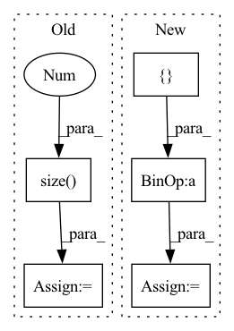

Pattern ID :16788
Before Change
labels = labels.argmax(dim=1)
batch_size = labels.size(0)
num_classes = clip_predictions.size(1 )
if self.num_classes is None:
self.clean_data(num_classes)
else:
assert num_classes == self.num_classes, f"Different number of classes used. Previously it was {self.num_classes} but got {num_classes}."After Change
if self.num_seen_samples is None:
self.num_seen_samples = [0] * self.num_classes
self.num_true_positives = [ 0 * self.num_classes
pred_labels = torch.argmax(clip_predictions, dim=1)
for pred, label in zip(pred_labels, labels):In pattern: SUPERPATTERN
Frequency: 4
Non-data size: 5
Instances Fragment ID: 56135965
Project Name: kiyoon/pyvideoai
Commit Name: 008cd39e5e879c4723ebbf74f4c647ad44d8820f
Time: 2022-02-24
Author: yoonkr33@gmail.com
File Name: pyvideoai/metrics/mean_perclass_accuracy.py
M Class Name: ClipMeanPerclassAccuracyMetric
N Class Name: ClipMeanPerclassAccuracyMetric
M Method Name: add_clip_predictions(4)
N Method Name: add_clip_predictions(4)
M Parent Class: Metric
N Parent Class: Metric
M File Name: pyvideoai/metrics/mean_perclass_accuracy.py
N File Name: pyvideoai/metrics/mean_perclass_accuracy.py
M Start Line: 35
M End Line: 48
N Start Line: 29
N End Line: 37
Before Change
truths: (bs, num_emotions)
"""
total = preds.size(0 )
num_emo = preds.size(1)
preds = preds.cpu().detach()
truths = truths.cpu().detach()After Change
aucs.append(np.average(aucs))
// zsl: 0.5 0.35 0.3
th = [ 0.5 * num_emo
for i in range(len(th)):
pred = preds[:, i]
pred[pred > th[i]] = 1 Fragment ID: 56135998
Project Name: wenliangdai/modality-transferable-mer
Commit Name: a73b176dd331ae413ba0c929ab4f6b177ac71fbd
Time: 2020-10-06
Author: wenliang.dai.1995@gmail.com
File Name: src/evaluate.py
M Class Name: AnonimousClass
N Class Name: AnonimousClass
M Method Name: eval_iemocap(2)
N Method Name: eval_iemocap(2)
M Parent Class:
N Parent Class:
M File Name: src/evaluate.py
N File Name: src/evaluate.py
M Start Line: 131
M End Line: 143
N Start Line: 131
N End Line: 142
Before Change
X_out = torch.zeros(x.size(0),self.dim_out).cuda()
adj_prob = torch.randn(x.size(0),2).cuda()
agreement_tensor = torch.zeros(x.size(0 ) ,1).cuda()
lead_pct_tensor = []
temp_thing = torch.tensor([]).cuda()After Change
// INITIALIZATION
x, edge_index = data.x, data.edge_index
L_containers = [None]*self.N_learners
filter_output = [ None* self.N_learners
filter_vstar = [None]*self.N_learners
X_out = torch.zeros(x.size(0),self.dim_out).cuda() Fragment ID: 56135969
Project Name: superlouis/node-select
Commit Name: 8f4d78188bc2e3d1940b4f6f821e17f7ef37b580
Time: 2020-09-30
Author: slouis@email.sc.edu
File Name: NODE_SELECT/model.py
M Class Name: NSGNN
N Class Name: NSGNN
M Method Name: forward(2)
N Method Name: forward(2)
M Parent Class: torch.nn.Module
N Parent Class: torch.nn.Module
M File Name: NODE_SELECT/model.py
N File Name: NODE_SELECT/model.py
M Start Line: 95
M End Line: 130
N Start Line: 95
N End Line: 115
Before Change
def calc_bandwidth(set1, set2, kernel_num=10):
batch_size = set1.size(0 )
seq_len = set2.size(0)
set1_centre = set1.mean(-1).view(-1, 1)
set2_centre = set2.mean(-1).view(1, -1)
distance = (set1_centre - set2_centre).pow(2).pow(0.5).max(-1)[0].max(-1)[0]After Change
def calc_bandwidth(first_kernel, third_kernel, kernel_num=20, max_scale=2.0, min_scale=0.1):
// * kernel: [batch_size, particle_num, particle_num]
kernel_mean = torch.cat([ first_kernel, third_kernel = [(kernel_mean * scale).view(-1, 1, 1).detach() for scale in scale_list]
first_items = 0
third_items = 0
for h in bandwidth_list: Fragment ID: 56136004
Project Name: deligentfool/dqn_zoo
Commit Name: 1ac00bac8d92870064cdcf754b6e29278f14ae79
Time: 2020-11-04
Author: 1027660817@qq.com
File Name: MMD_DQN/mmd_dqn.py
M Class Name: AnonimousClass
N Class Name: AnonimousClass
M Method Name: calc_bandwidth(5)
N Method Name: calc_bandwidth(3)
M Parent Class:
N Parent Class:
M File Name: MMD_DQN/mmd_dqn.py
N File Name: MMD_DQN/mmd_dqn.py
M Start Line: 33
M End Line: 40
N Start Line: 18
N End Line: 33